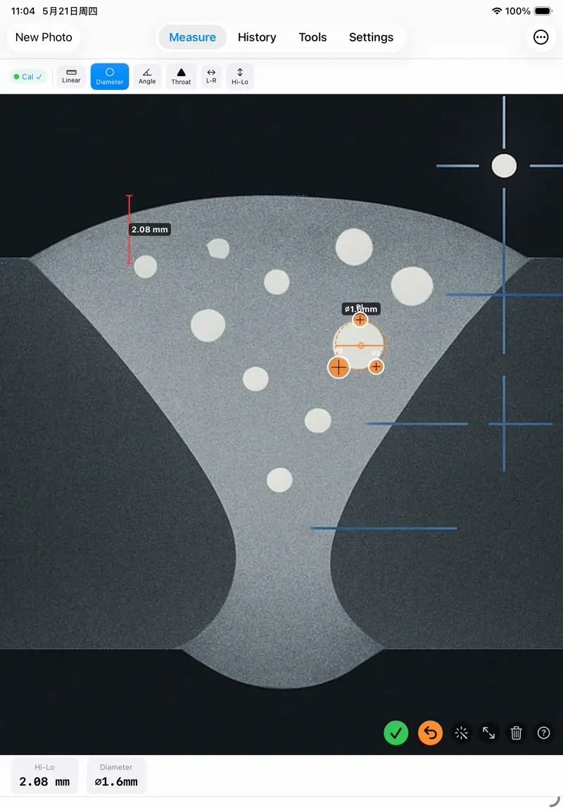

Photographiez. Calibrez. Mesurez. Évaluez selon l'EN ISO 5817.
WeldGauge transforme votre iPhone en station d'inspection de soudures portable. Utilisez l'épaisseur de tôle ou le diamètre du tube connus comme référence de calibration — aucun outil supplémentaire nécessaire. Mesurez le cordon, les caniveaux, les désalignements, les épaisseurs de gorge et plus, puis évaluez instantanément selon les niveaux de qualité B, C et D de l'EN ISO 5817.


Fonctionnalités clés
Tout ce dont un inspecteur en soudage a besoin pour une évaluation qualité sur site — de la capture photo aux résultats conforme/non conforme selon la norme.
📷 Appareil photo et import de photos
Photographiez les soudures avec un zoom jusqu'à 20× pour les détails en gros plan. Importez des images existantes depuis votre bibliothèque photo. La suppression de l'arrière-plan isole le profil de la soudure pour des mesures plus nettes.
📐 Calibration intelligente
Calibrez avec n'importe quelle dimension connue déjà présente dans la photo — l'épaisseur de tôle visible au bord du chanfrein, le diamètre extérieur du tube, ou une règle. L'app calcule un ratio pixel-mm précis. Aucun équipement supplémentaire nécessaire.
📏 Évaluation EN ISO 5817
Sélectionnez le type de défaut (502, 504, 507, 508, 5011, 5213, 512), saisissez l'épaisseur de paroi et obtenez instantanément le résultat conforme/non conforme pour les niveaux de qualité B, C et D. Guide de référence illustré intégré.
📋 Gestion de projets
Organisez les inspections par projet avec numéro de soudure, localisation et identifiant du soudeur. Plusieurs mesures par projet. Toutes les données sont stockées localement — rien ne quitte votre appareil.
🛠 Bibliothèque de raccords de tuyauterie
Base de données consultable des raccords de tuyauterie standard — coudes, tés, réducteurs, bouchons — avec dimensions et spécifications pour référence rapide sur le terrain.
🔒 Entièrement hors ligne et privé
Chaque fonctionnalité fonctionne sans Internet. Aucune collecte de données, pas de comptes, pas d'analytique. Idéal pour les inspections sur terrain dans des lieux isolés sans connectivité.
Voyez-le en action
Quatre flux d'inspection réels démontrant les capacités principales de WeldGauge.
Soudure bout à bout — calibration par l'épaisseur de tôle
Calibrez avec l'épaisseur de tôle connue visible au bord du chanfrein, puis mesurez un défaut de porosité.
Longueur de soudure — calibration par un trou circulaire
Utilisez un trou de diamètre connu comme référence de calibration pour mesurer précisément la longueur du joint.
Macrographie d'assemblage en T — évaluation EN 5817
Mesurez une éprouvette macro d'assemblage en T avec le guide de référence illustré EN ISO 5817 intégré.
Outils — bibliothèque de raccords
Parcourez la base de données de raccords pour une référence dimensionnelle rapide pendant les inspections sur le terrain.
Comment ça marche
Quatre étapes de la photo au résultat conforme/non conforme — sans logiciel de bureau.
1. Capturez
Photographiez la soudure avec l'appareil photo intégré (zoom jusqu'à 20×) ou importez une photo existante. Assurez-vous que la référence de calibration — bord de tôle, surface du tube ou règle — est visible dans le cadre.
2. Calibrez
Tracez une ligne le long d'une dimension connue dans la photo : l'épaisseur de tôle au bord du chanfrein, le diamètre extérieur du tube, ou une règle. Saisissez la valeur réelle et l'app établit le ratio pixel-mm.
3. Mesurez
Touchez pour mesurer n'importe quelle dimension de soudure — hauteur de cordon, profondeur de caniveau, longueur de jambe, épaisseur de gorge, désalignement. Déplacez, zoomez et tournez librement pendant la mesure.
4. Évaluez
Sélectionnez le type de défaut et saisissez l'épaisseur de paroi. L'app compare votre mesure aux limites de l'EN ISO 5817 et affiche le niveau de qualité atteint — B, C, D ou non conforme.
Cas d'usage réels
WeldGauge est conçu pour les environnements où les inspecteurs en soudage travaillent réellement.

Inspection des soudures bout à bout de pipelines
Photographiez les soudures circulaires sur les joints de tubes. Utilisez le diamètre du tube ou l'épaisseur de paroi connus pour la calibration. Mesurez la hauteur du cordon et le désalignement, puis évaluez selon l'EN ISO 5817.

Soudure d'angle — calibration avec l'épaisseur de tôle
Pas de règle ? Pas de problème. L'épaisseur de tôle visible au bord de la section transversale sert de référence de calibration. Mesurez l'épaisseur de gorge et les longueurs de jambe directement sur la photo.

Évaluation des caniveaux et des défauts
Mesurez la profondeur des caniveaux, l'excès de métal d'apport ou tout autre défaut. L'app évalue instantanément selon les trois niveaux de qualité de l'EN ISO 5817 avec des résultats clairs.

Inspection sur le terrain — assemblages de tuyauterie complexes
Inspectez les soudures sur les tés, coudes, réducteurs et raccords à brides. Fonctionne entièrement hors ligne — idéal pour les sites de pipelines isolés sans connectivité Internet.

Documentation et rapports
Exportez les résultats de mesure et les photos annotées pour les dossiers d'inspection. Toutes les données de projet organisées par numéro de soudure, localisation et soudeur — prêtes pour la documentation QA.
Questions fréquentes
L'app nécessite-t-elle une connexion Internet ?
Non. Toutes les fonctionnalités — appareil photo, calibration, mesure et évaluation EN ISO 5817 — fonctionnent entièrement hors ligne. Aucune donnée n'est jamais transmise.
Que puis-je utiliser comme référence de calibration ?
Tout objet de dimension connue visible dans la photo : l'épaisseur de tôle au bord du chanfrein, le diamètre extérieur du tube, une règle, un cales-étalon, ou même une pièce de monnaie. L'app convertit les distances en pixels en millimètres réels à partir de votre référence.
Quelles normes sont prises en charge ?
WeldGauge évalue les défauts de soudure selon l'EN ISO 5817, couvrant les niveaux de qualité B (rigoureux), C (intermédiaire) et D (modéré). Sept types de défauts sont pris en charge avec des guides de référence illustrés.
Quelle est la précision de la mesure ?
La précision dépend de votre référence de calibration et de la qualité de l'image. Avec une dimension de référence clairement visible et une photo bien nette, une précision sub-millimétrique est atteignable.
L'app collecte-t-elle des données ?
Non. Aucune collecte de données — pas d'analytique, pas de suivi, pas de comptes. Toutes les photos et mesures restent sur votre appareil. Consultez notre Politique de confidentialité.
Fonctionne-t-elle sur iPad ?
Oui. WeldGauge est une app universelle optimisée pour iPhone et iPad.
À qui s'adresse WeldGauge ?
Les inspecteurs en soudage (CWI, CSWIP, IWI), les ingénieurs qualité, les superviseurs de fabrication et les étudiants en soudage — tous ceux qui ont besoin d'une évaluation rapide et normée des soudures sur site.
Comment contacter l'assistance ?
Écrivez à wangning.engineer@outlook.com. Le délai de réponse habituel est de 24 à 48 heures.
Télécharger l'app
WeldGauge est disponible sur l'App Store pour iPhone et iPad.